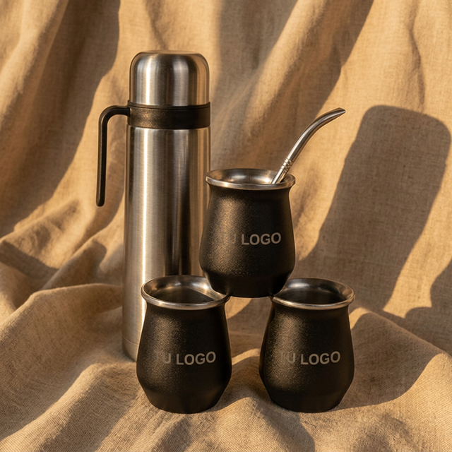
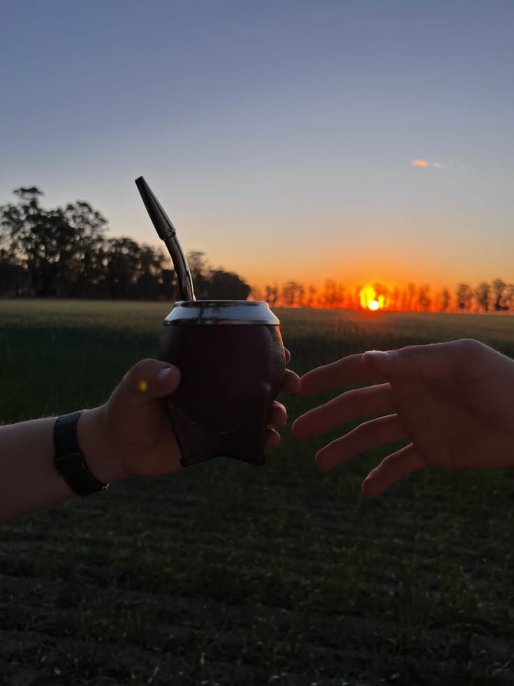

Más que una costumbre, nuestro ritual
En Querandí Mates creemos que el mundo se frena cuando el agua toca la yerba. Nacimos para acompañar tus mañanas, tus charlas largas y esos momentos donde un buen mate es la mejor compañía.

El valor de lo hecho a mano
No hacemos mates en serie. Detrás de cada pieza hay horas de trabajo, seleccionando las mejores calabazas y trabajando el cuero con artesanos que heredaron el oficio de sus abuelos.
Sabemos que un mate es para toda la vida, por eso elegimos materiales nobles que envejecen con vos, ganando carácter en cada cebada.
El sabor del encuentro
Para nosotros, cebar es un acto de amor. Es la excusa perfecta para cortar la tarde, para escuchar a un amigo o para encontrar inspiración cuando estás solo frente a un proyecto.
Nuestra mayor recompensa es saber que nuestros mates son el centro de tus mejores momentos.

Lo que nos hace únicos
Materiales Nobles
Calabazas de origen seleccionado, cueros genuinos y virolas trabajadas al detalle. Calidad que se siente al tacto.
La Cebada Perfecta
Diseñamos la morfología de cada mate pensando en la ergonomía y en cómo mantener la temperatura ideal de tu yerba.
Hecho en Argentina
Fomentamos el trabajo local. Cada mate que llega a tus manos impulsa a familias artesanas de nuestro país.
"El mate no se toma por sed, se toma por ganas de compartir."
— Familia Querandí